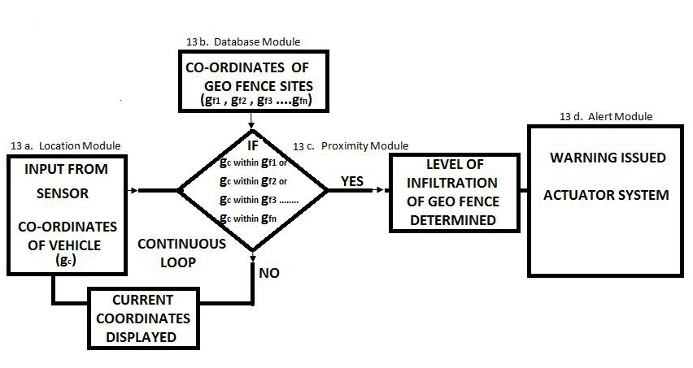
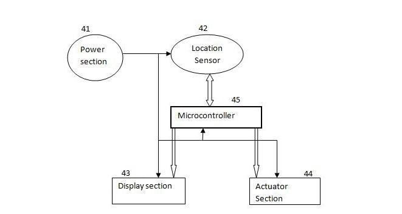
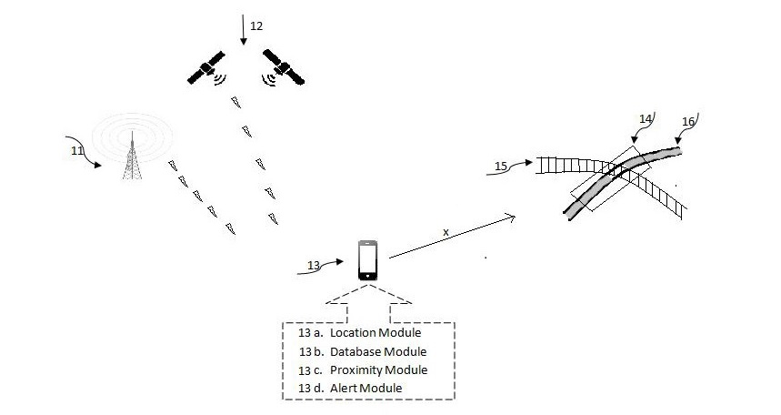
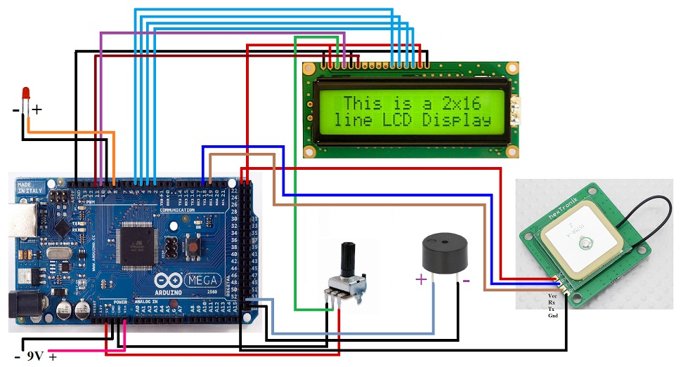

SEPTEMBER-OCTOBER 2015 | ZINE LAB | MNIT JAIPUR
OBJECTIVE
Building a system capable of designing a virtual perimeter-geofence around unmanned rail-road crossovers to prevent mishaps
RESEARCH ASPECTS
• Two on-board GPS to ascertain the correct current location of the moving vehicle
• Option to build geofence using co-ordinates that are either pre-fed or dynamically updated over the internet, for all the rail-road crossovers in the country
• Low power bluetooth supported system for instant update on new geofences
 
METHODOLOGY
The system was designed to be mounted in vehicles and could initiate a series of warnings if in case the vehicle moves nearby any rail-road crossover. The system helped avert any inappropriate attempt at crossing the junction when there are chances of a train to cross at the same time. The setup drew several layers of concentric circles/polygons that served as multiple levels of perimeter breach. The on-board GPS from the vehicle checked for such breaches and initiated control measures depending upon the intensity of breach. The corrective measures included verbal warning, speed reduction and automatic vehicle lockdown among others.
RESULTS
• Published a patent for the innovative technology
• The system current is being implemented into use by the North-Eastern Railways, a Government of India undertaking.
GALLERY
 